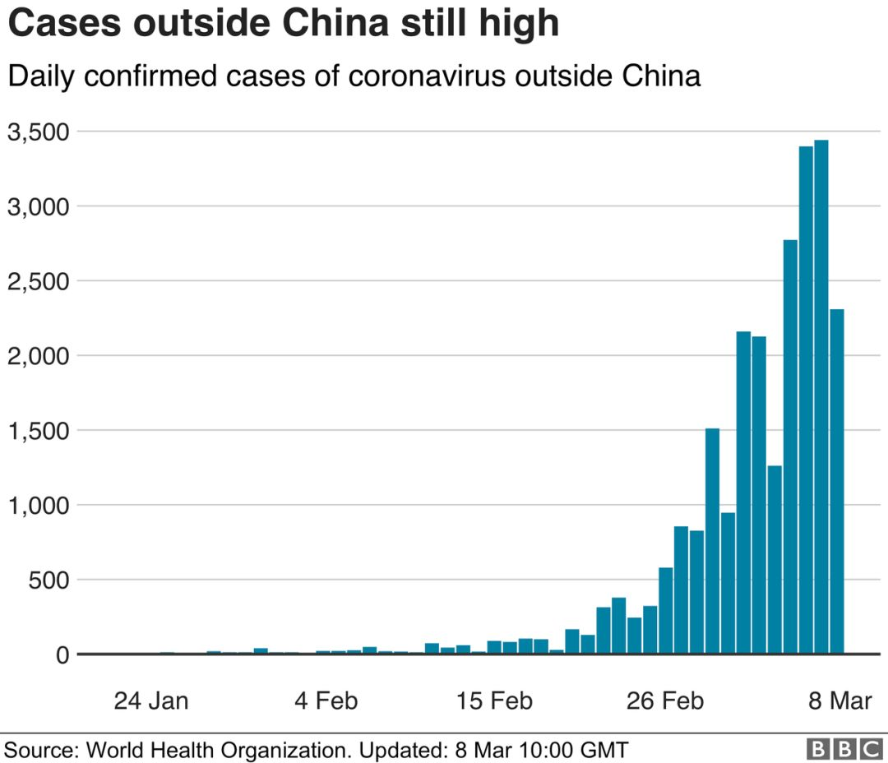
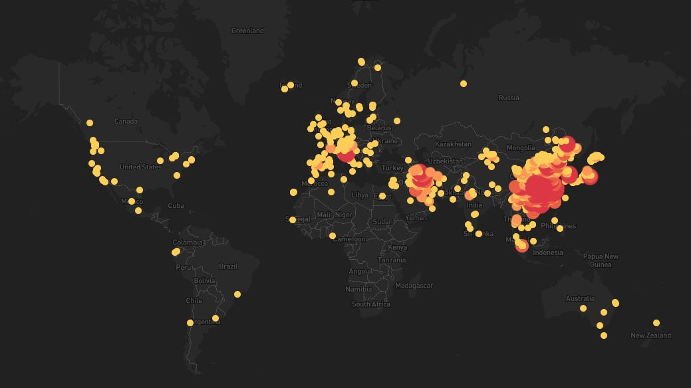

中国疾控中心原副主任：反思此疫，中国疾控该改革了 | 独家专访
原文链接 备份链接 作为中国疾控中心原副主任，杨功焕是坦诚的。多年国际组织和疾控系统工作的经验让她对新冠病毒疫情中萌生的一些问题更加敏感。 她认可武汉“封城”，对中国公共卫生硬实力有信心，但又不满新冠病毒疫情初期的反应迟缓，质疑公共卫生的 …

作为一个科学大国，英国是如何应对新冠疫情的？他们是否能走出一条和中国不同、社会成本更低而行之有效的防疫之路？为此我们采访了流行病学专家、牛津大学终身教授陈铮鸣。
英国于 1 月底确诊第一位来自中国的输入性新冠患者。截至 3 月 8 日，新冠患者确诊数量为 273 例，位列欧洲第六位，排在意大利、法国、德国、西班牙和瑞士之后。3 月 6 日出现第二个死亡病例，为一名 80 多岁男性。
随着武汉疫情的暴发，1 月底英航和维珍航空暂停了往返中国大陆的所有航班，随后英国政府派专机从武汉和周边地区撤侨 300 余人。
陈铮鸣介绍说，尽管如此，英国整体还算比较淡定和理性。对通过其他航班或途径抵英的旅客或返程的公民，如来自湖北省，或中国其他地区但有相关症状（如发烧），则英国政府要求居家自我隔离 14 天。除此之外，并无任何其他限制和规定。

图 | 英国的新冠患者每日新增数目趋势。（来源：BBC）

图 | 中国境外的新冠患者每日新增数目趋势。（来源：BBC）
整个 2 月份，英国的疫情相对稳定，只有 20 余人确诊，且绝大多数为输入性，并在很短的时间内隔离了密切接触者，有效地防止了疫情的扩散。近一周多以来，随着意大利疫情的急剧恶化和输入性病例的增加，英国的感染人数也出现了快速上升的趋势。为此，英国政府出台了完整的防疫计划，以应对疫情的蔓延。
英国政府公布的防疫计划共分 4 个阶段包括围堵、拖延、研究和减损。目前的防疫政策仍集中在围堵阶段，主要是及时诊断并追踪和隔离所有密切接触者。如疫情进一步恶化，出现广泛的社区传播，则考虑转入防疫第二阶段，即拖延和 “社会隔离” 阶段，相关措施包括休学、休市、休工，以避免短期内出现疫情的大暴发，并尽量拖延至夏季，使医疗机构能有更充足的资源从容应对病人的诊治。
陈铮鸣说，在新发疫情面前，政府应该实事求是，及时通报疫情发展包括可能出现的最坏的结果，以及相关的个体和社会的防疫措施，这可能是避免无谓恐慌和疫情蔓延最好的“疫苗”。

图 | 全球新冠疫情分布。（来源：HEALTHMAP）
“这不是一场小规模的战斗，英国也做了最坏的打算。”

DeepTech：意大利为什么会成为欧洲的重灾区，而且感染者中病死率这么高？
陈铮鸣：意大利成为重灾区有偶然的因素，也可能有其必然的因素。
首先意大利是旅游胜地，到访的中国游客人数甚多，每年超过 150 万人次，而中国赴英游客最高纪录是 27 万人次。
另外还有一个很特殊的情况，目前在意大利生活、工作、定居的温州人约有十几万，是一个非常庞大的群体，春节前后人口流动非常频繁。同时温州是湖北以外中国疫情最为严重的城市，因为温州人在武汉经商的特别多。这样无形就增加了疫情在意大利扩散的风险慨率。（_DeepTech 注：截至 3 月 9 日，温州确诊数量为 504 例，是湖北省以外确诊病例最多的中国城市。_）
意大利在疫情刚开始的时候没有采取任何措施，直到 1 月 30 日才暂停了飞往中国大陆、香港和台湾的航班。在这之前，已有大量来自温州或中国其他地区的游客抵达意大利。此外，即使禁飞也并不能完全封锁住疫情传播，尤其是在欧洲人口流动十分频繁，人们仍然可以从欧洲其他国家自由进入意大利。
另外，新冠病毒主要通过飞沫和密切接触传播，而意大利人是非常热情的民族，有见面互相拥抱和接吻的习惯，这就增加了病毒传播的可能性。
意大利的新冠病毒病死率比中国还要高，大约 4%。目前死亡病例中，平均年龄高达 81 岁，绝大部分患者生前都有其他健康问题，这可能相当程度上导致了高死亡风险。
DeepTech：英国也有来自意大利的输入病例吧？
陈铮鸣：英国境内疫情绝大多数都是输入性的，特别是从中国、意大利、钻石公主号等重点区域来的旅行者，以及从新加坡君悦酒店参加商业会议回来的超级传染者。
第一波是从中国过来的新冠携带者，第二波主要来自欧洲大陆。2 月下旬正好是学生放假，有一个 10 天左右的假期，很多人就到意大利去度假滑雪，最近陆陆续续发生的很多病人都与意大利有关。
目前英国被传染的患者相对年纪较轻，所以病死率没有意大利那么高。从意大利各地度假回来的人目前大都采取了居家隔离措施，但是否能有效地防止发生广泛的社区传播，目前形势并不乐观。
DeepTech：英国政府制定了四步走的行动计划，看起来有条不紊，这样的举措来应对新发疫情是惯例吗？
陈铮鸣：英国是比较崇尚科学、重视科学的，应对重大公共卫生事件，喜欢讲科学规矩、讲科学套路。
循证决策这一点很重要。比如 1990 年代疯牛病时期，英国对奶牛怎么传播病毒做了大量公共卫生研究，再根据研究的证据不断调整应对方案。此次应对新冠病毒的疫情，英国政府也汇集了大量的专家，包括流行病学、公共卫生以及临床专家，由他们制定出一套科学的行动方案作为指南，然后政府决策，而不是说匆忙上阵。
这不是一场小规模的战斗，英国也做了最坏的打算。首相约翰逊称，不排除五分之一的劳动力同时患病的可能。当然这个是最坏的结果。从科学角度来讲，这是实事求是的做法，应该告诉民众可能出现的最坏的结果是什么，要相信民众的判断能力。
“中国的有些措施在英国同样可行，而有些不可行，且社会成本过高。”
DeepTech：有报道英国属于内紧外松的这种做法，似乎跟新加坡做法有点像。
陈铮鸣：我觉得目前疫情还是一个过渡阶段，还会继续恶化，后期对英国政府和医疗体系的挑战极大。目前患普通感冒和流感的病人很多，加上医生和护士短缺（大约有数万名护士岗位空缺），医疗体系已经处于一种紧绷的状态。未来肯定要根据疫情的发展来研判并逐步调整防控措施，以及作出必要的取舍。
中国的有些措施在英国同样可行，而有些不可行，且社会成本过高。除伦敦外英国的人口密度较低，这对疫情防控相对有利。相反，英国的社区没有围墙的，四通八达，根本无法像中国那样对小区实行封闭式管理，另外民众可能也不答应。
DeepTech：英国学术界、科学界在新冠疫情发生以来做了哪些工作？
陈铮鸣：英国医学研究委员会在 2 月初就出台了一个研究计划，拨款 2000 万英镑，用于开展疫苗、药物以及流行病学研究。近期，政府又投入了更多的资金，加快研发步骤和力度。
科研方面，牛津和帝国理工学院做了不少工作，包括疫苗和疫情预测。1 月中，帝国理工的一个团队根据有限的海外感染人数数据，较为准确地评估出了武汉的疫情。牛津的传染病研究实力非常强，新冠病毒的疫苗研究在国际上处于领先地位，现已小批量生产，可能 5、6 月份就可以进入人体试验。此外，牛津的一个团队和中日友好医院曹彬团队合作，共同参与瑞德西韦临床试验。
DeepTech：新冠疫情发生以来，英国社会的认识有什么样的演变？
陈铮鸣：最近一段时间媒体报道密度明显加大。除了报道疫情和政府措施外，也有很多专家来解读。此外，也有大量公益性广告，进行健康宣教。其主旨是让民众充分知情，正确认识相关病症以及应该采取的防控措施。
武汉疫情初始是一个教训。由于大家不知情，都很盲目，感觉没事，一旦宣布人传人以及封城以后，大量民众产生恐慌情绪并蜂拥到医院，这就导致第二波、第三波的病毒传播和医院交叉感染。
当然这跟医疗体制有关。英国目前增设了高通量的电话专线，万一出现可疑症状先拨打电话，有专人收集相关信息并提供诊疗建议。当地的公共卫生机构会派人上门，或者让患者到指定机构去采样做检查。这在很大程度上避免了直接去医院就诊发生交叉感染的风险。

图 | 英国政府对怀疑自己感染新冠病毒者的建议：不要去医院、社区诊所或急诊，首先拨打专线电话，自我隔离，报告信息，检测，听从医务工作者的建议。（来源：BBC）
DeepTech：英国民众对戴口罩是怎样的认识？与世界卫生组织关于戴口罩的建议一致吗？
陈铮鸣：对于戴口罩，东西方有明显的文化差异。我到这里住了 30 年，几乎没有看到任何人戴口罩。只有病人到医院里去看病，为了防止打喷嚏的飞沫，才需要戴口罩，对正常人是没有必要戴口罩的。如果戴上口罩在大街上，英国人就会认为一个病人到处走动是危险的。所以这也引发了一些冲突。
目前英国将近 7000 万人只有 200 多例确诊，全民都戴口罩不现实，对预防病毒感染的效果也不会明显。世界卫生组织发布的新冠病毒个人防护指南建议是，在出现相关症状或在照顾疑似患者或确诊患者时才需要戴口罩。很多人戴了口罩不洗手，或者戴口罩方法不正确，反而会增加感染风险。当然，随着疫情的变化，人们的心理和风险预期也可能发生明显的改变。
DeepTech：在中国口罩不是一个小问题，其实还衍生了一些次生的问题，比如说不戴口罩就不能进超市，不能进入商场，甚至在大街上不戴口罩会被抓起来。中国是不是对口罩的作用夸大了？
陈铮鸣：大家刚开始对疫情不重视，重视之后却是恐慌，于是出现拼命抢口罩的现象。很大程度上，大家自觉不自觉把戴口罩作为一个很重要的心理安慰，尤其是在目前疫情已得到完全控制的地区。要全社会完全摘口罩并非易事，可能还需要做很多铺垫和宣教工作。
“在英国，这个循证决策的过程是一种传统。”
DeepTech：能不能介绍一下此次疫情中的英国政府跟专家的关系，以及其首席科学家的运作模式？
陈铮鸣：发生新生疫情时，政府不可能拍脑子来做决策，首先要从科学层面来进行评估。首席科学家会召集各个领域的专家，包括流行病学、临床、疫情模型预测等各个领域专家来提出各种预案以及应对措施，不打无准备之仗。在英国，这个循证决策的过程是一种传统。
在这基础上由政府拿出具体的行动方案，这个行动方案不完全是考虑医学的，它要考虑最坏的结果和最好的结果，包括物资调配、防御工作（社区防御、机场安全等等）。因为牵一发动全局，一旦决策错了或做过头了带来的影响也不得了。当然这个方案也不是一成不变，它也可能不断调整。
100 年以前，英国在应对西班牙大流感的时候也犯过错。当时的社会相对比较专制，有两个非常深刻的教训。第一，西班牙大流行持续了 2 年，来了三波。其实第一波影响不是很大，后面两波影响更大。第二，英国当时担心民众恐慌，也是封锁消息，一些游行聚会也没取消，所以在很大程度上导致了疫情的恶化和蔓延。
DeepTech：请谈一下中国政府和专家的关系，因为在中国疫情中，一些专家的表现也有不合理的地方。
陈铮鸣：很重要的一点是要有一个专业的声音。专业的声音第一就是要实事求是，第二要及时通报和解读疫情和防控措施。信息公开了以后，人们的解读就不会差别太大。
中国的疫情通报和解读中，早期似乎更侧重临床治疗，而缺少针对疫情的专业分析和解读。比方说有人经常提到所谓的拐点，但对于什么叫拐点并没有给出清晰的定义。
同样，对于疫情的结束，目前也没有明确的定义。可能在不同的地区要采用不同的标准，不能一刀切。比如埃博拉疫情的结束是最后一个患者出院后两个潜伏周期内没有再出现任何病人。若没有明确的标准，就难以把握和掌控，民众也会产生迷茫，对民生和经济生产的恢复也会带来不利的影响。
DeepTech：你认为中国适合英国这样的首席科学家制度吗？
陈铮鸣：应该可以，也不一定是一个科学家，但是应该可以有一个德高望重的人来担当这个角色。这里并不是说由他来做决策，因为任何人的科学认识可能是有局限的，他是领队，来协调、召集。
DeepTech：这次疫情中出现了双黄连等事件。为何中国出现急病乱投医的现象和心理这么强烈？
陈铮鸣：涉及的因素可能有多方面，包括一些文化的因素。
其一，媒体喜欢捕风捉影，当然在国外也有这种情况。
其二，科学家对具体事物的把控也很重要。英国的科学家有许多传媒方面的训练，比如怎么面对媒体，怎么进行新闻发布，也有主管部门审核和把关。把故事讲好，分寸把握很重要，如把握不当，就会产生误导。
其三，特殊时期，政府和民众希望有好消息。由于这方面的压力和需求，研究人员就可能走捷径。
其四就是利害冲突。比方说我开了一家药厂，我同时也是首席科学家，我来推销这个东西可能就会涉及利益目的。在国外，对这种学术规范很严格。
最后就是文化。中国民间比较相信偏方、秘方。历史上欧美也有传统医学和各种根据经验产生的疗法。但近几十年来，通过采取科学的方法来验证，淘汰糟粕，去伪存真，现在的治疗就很科学化和规范化。中医药是个宝库，但要进一步发扬光大，走向世界，需要有更多的科学证据，尤其是严格的随机对照临床试验的证据。
陈铮鸣简介
（来源：牛津大学）
陈铮鸣，牛津大学纳菲尔德学院人口健康与大数据研究所教授。1983 年毕业于上海医科大学（现复旦大学医学院）并获医学学士学位。1992 年获牛津大学博士学位。2006 年晋升为牛津大学医学院终身教授。现任牛津大学纳菲尔德人群健康系中国项目部主任、中国协和医科大学名誉教授及上海复旦大学顾问教授。2009 年创建中国牛津国际人群健康研究中心，并担任中心执行主任。主要研究领域为常见慢性病（如中风、缺血性心脏病、癌症）的临床药物疗效评估、转化医学、慢性病的环境及遗传病因学研究以及发展中国家慢性病控制策略。近 20 年间共领导完成了近十项大规模随机临床试验及流行病学研究项目。
-End-
DeepTech关于新冠肺炎的系列报道（上下滑动可见全部报道）：
华南海鲜市场不是病毒发源地！中科院团队基因追踪 “零号病人” 再进一步
新冠疫情最终结局是什么，会成为全球大流行吗？多位权威专家：病毒可能与人类长期共存
新冠病毒进化成 “信息疫情”：次生灾害丛生，恐慌和种族主义泛滥
新冠病毒疫苗上市最短6个月，最长10年｜独家采访美国生物医疗巨头Moderna
新冠病毒阴谋论疑云：“病毒非自然形成”，印度学者研究被哈佛大牛批“不靠谱”
双黄连一夜全网脱销，美国首例病情缓解则靠这个药！中国有望能用上
世卫组织正式将武汉肺炎定性为“国际关注的突发公共卫生事件”！
病毒“人传人”去年12月中旬或已发生？武汉肺炎传播性、致死率暂低于SARS，两大医学顶刊发布相关患者数据
抗击武汉肺炎最佳药物现身？《科学》杂志：一种在研抗埃博拉药物最有希望
无症状病例已现！到底是谁把新冠病毒带到了武汉？科学家加速病毒溯源
疫苗研发能否跑赢武汉肺炎？mRNA技术“高调登场”，全球科研力量投入新型疫苗研发
德国教授真有武汉肺炎“神药”？“最强抑制剂”从未进行人体测试！全球学者投入武汉肺炎治疗技术战
武汉封城能否防止超级传播者？世卫：定性“突发公共卫生事件”仍需更多信息
武汉肺炎首场国家新闻发布会：病毒存在变异可能，疫情存在进一步扩散风险
武汉实施进出管控！迄今肺炎疫情最权威声音，钟南山表示须警惕春运超级传播者

原文链接 备份链接 作为中国疾控中心原副主任，杨功焕是坦诚的。多年国际组织和疾控系统工作的经验让她对新冠病毒疫情中萌生的一些问题更加敏感。 她认可武汉“封城”，对中国公共卫生硬实力有信心，但又不满新冠病毒疫情初期的反应迟缓，质疑公共卫生的 …
原文链接 备份链接 澎湃新闻记者 南博一 为遏制新冠病毒的传播，3月8日，意大利封锁了该国北部的伦巴第大区和11个邻近省份，1600万人的自由流动受到影响，封锁将一直持续到4月3日。 “我们面临着一个紧急情况，一个全国性的紧急情况，” …
原文链接 备份链接 澎湃新闻特约撰稿 孙品烁 邓宗宇/央视新闻 当地时间3月5日18时，意大利民防部门负责人、新冠病毒应急委员会专员安杰洛·博雷利在例行疫情新闻发布会上表示，意大利现存新冠病毒感染肺炎病例为3296例，较前一日增长590 …
原文链接 备份链接 武汉已从阻击战转为反击战。欧洲疫情迅速蔓延，单日新增近千 2020年2月26日，在马来西亚雪邦，从武汉撤回的马籍民众抵达当地机场机场。图/ 法新 文 |《财经》数据研究员徐进 图 |《财经》视觉中心 编辑 | 郝洲 …
原文链接 备份链接 图片来源：图虫 特约作者：钱伯彦 陈英 “ 笔者尝试戴上口罩，但很快引起周遭人群窃窃私语。由于德国出现过乘客向列车员“举报”有疑似病例而逼停整列高铁的先例，笔者最终选择放弃继续佩戴口罩。 ” 新冠病毒的爆发在欧洲各国至 …